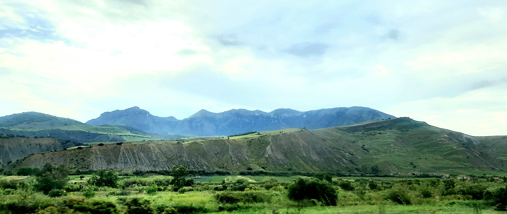

Calanchi di “Ottosalme”

ITALIANO
- Areale in destra orografica del Fiume Imera Settentrionale, in cui è visibile una spettacolare struttura calanchiva insistente sulle argille mioceniche.
INGLESE
- I am Gaetano Ferrarelli
Torna alla mappa